Building LwM2M applications for STM boards with I-CUBE-Anjay#
Start prototyping custom LwM2M applications on your STMicroelectronics board with I-CUBE-Anjay using STM32CubeMX.
Prerequisites#
- An STM board with a USB cable.
- Installed STM32CubeMX.
- Downloaded Anjay I-CUBE pack file.
Step 1: Installing the Anjay I-CUBE software pack#
- Open STM32CUBEMX and in the New project section, select ACCESS TO BOARD SELECTOR. 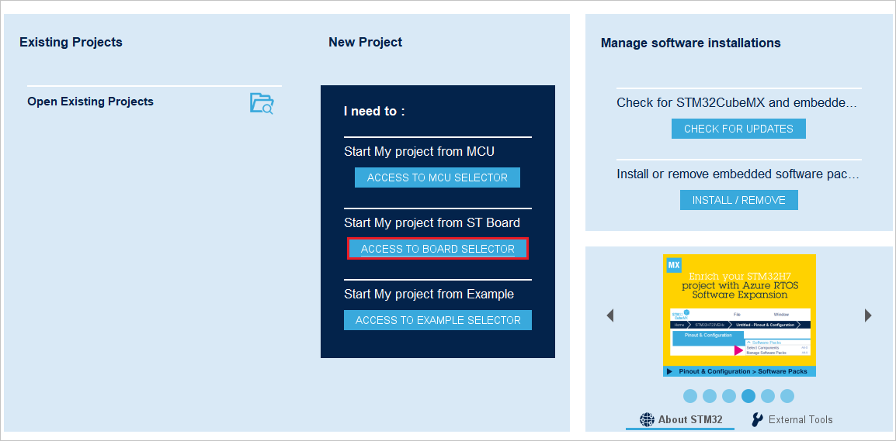
- From the list of STM boards, select your board, click Start project and click No in the Initialize all peripherals with their default mode pop-up that appears.
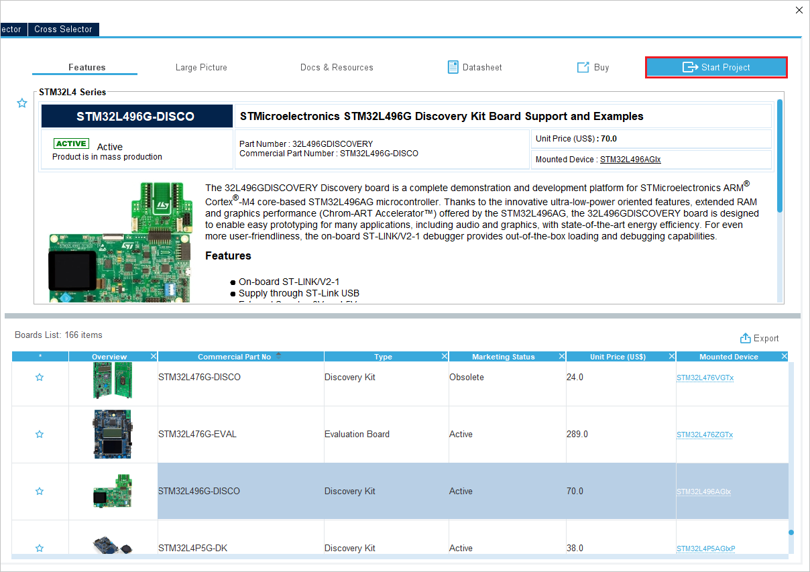 - In the Pinout & Configuration tab, click Software Packs and select Manage Software Packs.
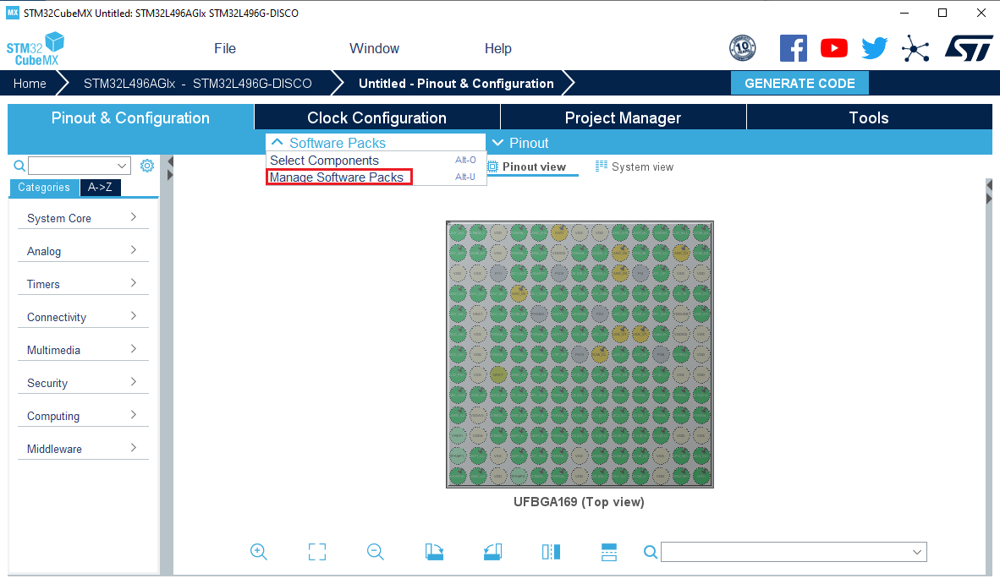
- Click From local and select your Anjay I-Cube pack from your local disk. 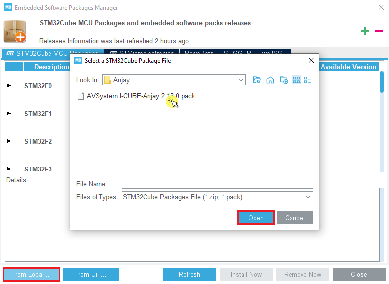
- After reading the license agreement, check the license agreement checkbox and click Finish. The pack will be installed in a few seconds.
- Back in the Pinout & Configuration tab, click Software Packs and select Select Components. 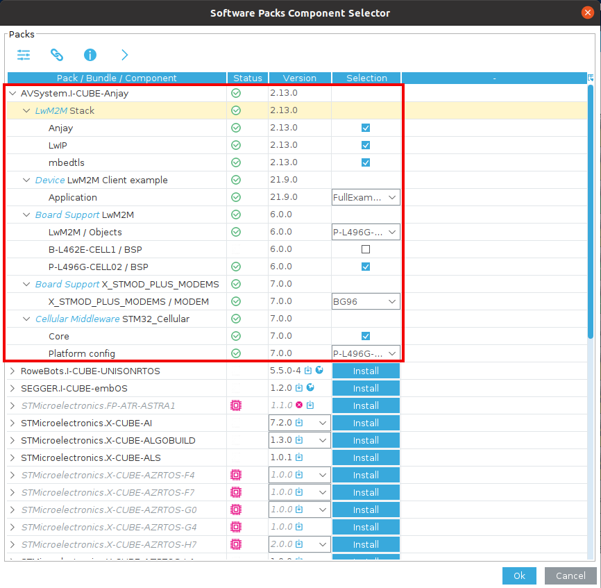
- From the list of packs, click AVSystem.I-CUBE-Anjay to expand a list of bundles and components.
- Configure options according to the specific instruction for your board in the Specific CubeMX settings.
Step 2: Configuring the Anjay I-CUBE application#
Before you generate code for your application, you need to configure it as per the specific requirements for your board:
- Back in the Pinout & Configuration tab, expand the Software Packs tab that has appeared in the side menu and click AVSystem.I-CUBE-Anjay.x.xx.x:
- In the Mode window that appears, check all the boxes next to the LwM2M Stack, Device LwM2M Client example, Board Support LwM2M, Board Support X STMOD PLUS MODEMS, Cellular Middleware STM32 Cellular options. 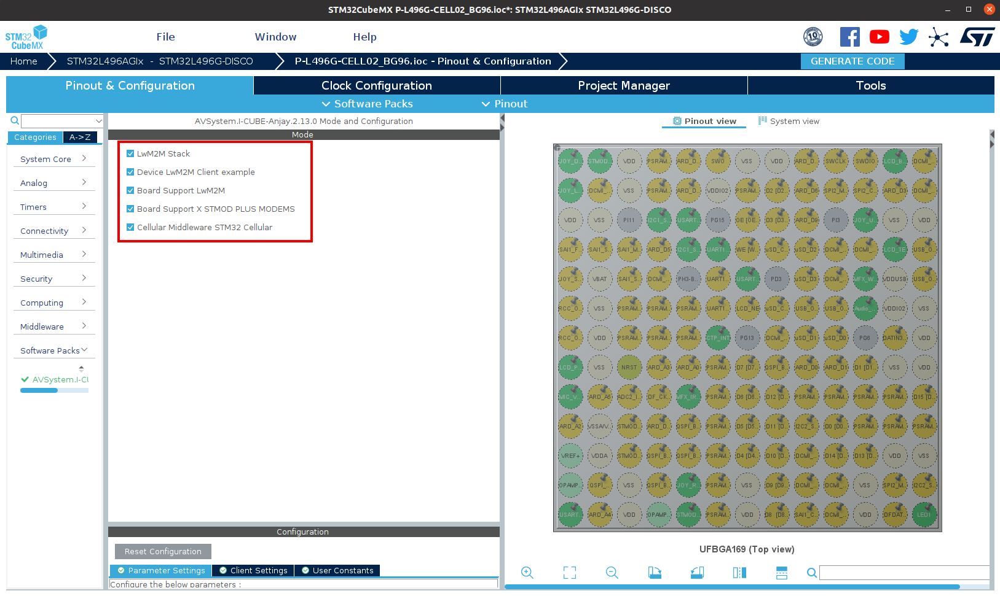
- In the Configuration window:
- Go to the Parameter Settings tab and configure your Anjay Library. For a detailed description of all Anjay library configuration options, see here. 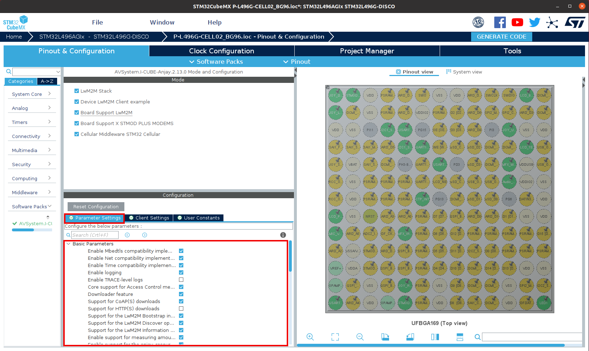
- Go to the Client Settings tab and configure your LwM2M Client parameters like Endpoint name, PSK, PSK identity, server URI and others. 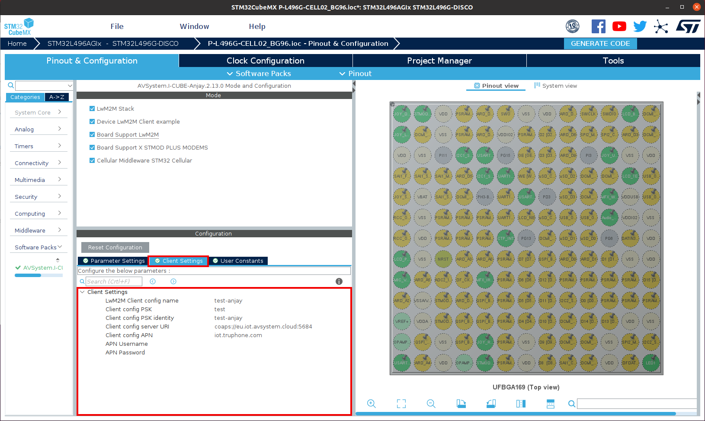
- In the Pinout & Configuration tab:
- Expand the Connectivity, Middleware, Security and System Core tabs:
- Configure options according to the specific instruction for your board in the Specific CubeMX settings.
- Expand the Connectivity, Middleware, Security and System Core tabs:
Step 3: Generating application code#
- Back in your project overview, select the Project Manager tab:
- In the Project tab:
- In the Project Name field, provide a name for your project.
- From the Toolchain/IDE expandable list, select STM32CubeIDE.
- In linker settings adjust Minimum Heap Size to 0x5000 and Minimum Stack Size to 0xC00.
- In the Code Generator tab:
- Check the Generate peripheral initialization as a pair of '.c/.h' files per peripheral.
- In the Project tab:
- Click GENERATE CODE and confirm by clicking Yes in the pop-up. 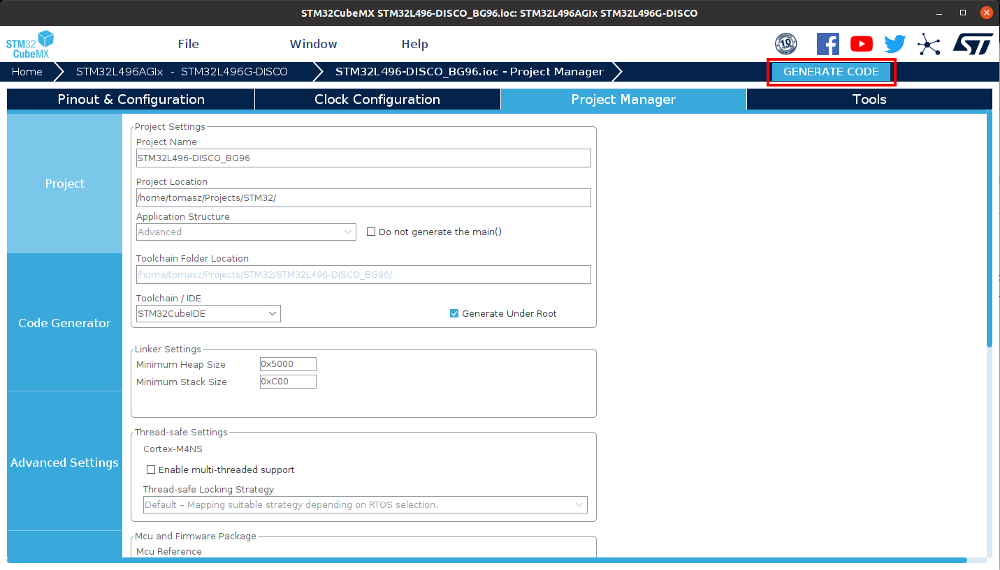
- After the project is generated, you can use it further in the CubeIDE to develop, flash and debug your application.
Specific CubeMX settings#
B-L462E-CELL1#
Start from board selector with B-L462E-CELL1 board, do not initialize all peripherals with their default mode.
Through Select Components menu choose desired components from the pack, in this example select:
- LwM2M Stack
- Anjay
- LwIP
- mbedtls
- Device Application - FullExample
- Board Support LwM2M
- LwM2M Objects: B-L462E-CELL1
- B-L462E-CELL1 BSP
- Board Support X_STMOD_PLUS_MODEMS - TYPE1SC
- STM32_Cellular
- Core
- Platform config: B-L462E-CELL1
Apply the following settings:
- Connectivity tab:
- I2C1 - Enable I2C1
- USART1 - Enable Asynchronous, enable global interrupts
- USART2 - Enable Asynchronous, enable global interrupts
- USART3 - Enable Asynchronous, enable global interrupts
- Middleware tab:
- FreeRTOS
- Interface - CMSIS_V1
- TOTAL_HEAP_SIZE - 32768 Bytes
- USE_COUNTING_SEMAPHORES - Enabled
- FreeRTOS
- Project Manager:
- Code Generator - Enable Generate peripheral initialization as a pair of '.c/.h' files per peripheral.
- Software Packs:
- I-CUBE-Anjay - select all enabled components and modify Client Settings with connection parameters. Parameter settings can be modified to alter Anjay LwM2M Library configuration.
Generate the project and open it in STM32CubeIDE.
Right click on the project Build Configurations -> Set Active -> Release.
Select generated project and modify Properties -> C/C++ Build -> Settings -> MCU Settings
Change Runtime library to Standard C.
Flash the project using Run As -> STM32 Cortex-M C/C++ Application.
P-L496G-CELL02#
Start from board selector with STM32L496G-DISCO board, do not initialize all peripherals with their default mode.
Through Select Components menu choose desired components from the pack, in this example select:
- LwM2M Stack
- Anjay
- LwIP
- mbedtls
- Device Application - FullExample
- Board Support LwM2M
- LwM2M Objects: P-L496G-CELL02
- P-L496G-CELL02 BSP
- Board Support X_STMOD_PLUS_MODEMS - BG96 or MONARCH (depending on your setup)
- STM32_Cellular
- Core
- Platform config: P-L496G-CELL02
Apply the following settings:
- Connectivity tab:
- I2C1 - Enable I2C
- USART1 - Enable Asynchronous, enable global interrupts
- USART2 - Enable Asynchronous, enable global interrupts
- Security tab:
- RNG - Enable
- Middleware tab:
- FreeRTOS
- Interface - CMSIS_V1
- TOTAL_HEAP_SIZE - 32768 Bytes
- USE_COUNTING_SEMAPHORES - Enabled
- USE_TIMERS - Enabled
- vTaskDelayUntil - Enabled
- uxTaskGetStackHighWaterMark - Enabled
- FreeRTOS
- System Core
- SYS
- Timebase Source - TIM1
- SYS
- Project Manager:
- Code Generator - Enable Generate peripheral initialization as a pair of '.c/.h' files per peripheral.
- Software Packs:
- I-CUBE-Anjay - select all enabled components and modify Client Settings with connection parameters. Parameter settings can be modified to alter Anjay LwM2M Library configuration.
Generate the project and open it in STM32CubeIDE.
Select generated project and modify Properties -> C/C++ Build -> Settings -> MCU Settings
Change Runtime library to Standard C.
Flash the project using Run As -> STM32 Cortex-M C/C++ Application.
Compiler-dependent options#
When generating code, CubeMX might warn you that USE_NEWLIB_REENTRANT option must be set. However, not all the IDEs have newlib in their toolchain libraries and checking this option can make your project uncompilable. For IAR and Keil simply press Yes to skip it.
Depending on the Compiler Toolchain, redirecting standard output into the console via UART and serial port might require additional options in IDE and compiler-specific code. Solutions can be found below as well as in the Pack's demonstration projects.
IAR Embedded Workbench#
IAR Embedded Workbench for ARM version 9.20.2 or higher is required to compile the project.
-
To compile client application example, navigate to Project -> Options ... -> C/C++ Compiler -> C dialect and set Allow VLA. 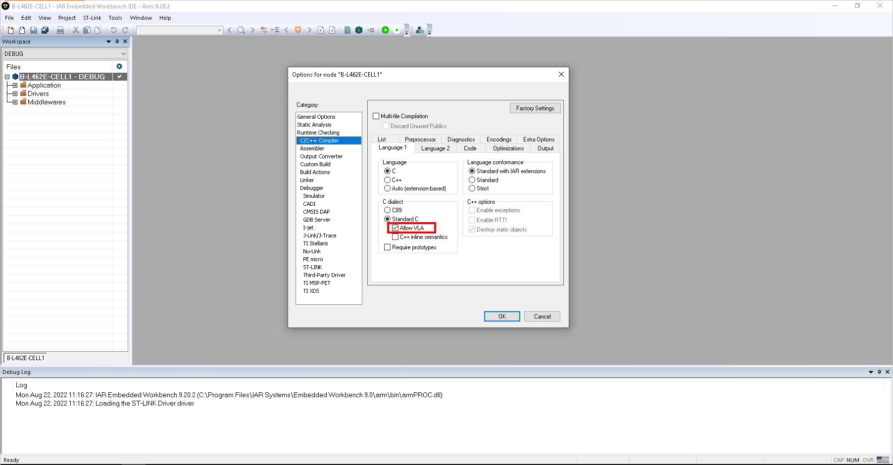
-
To allow and handle serial output with application flashed on board and not attached to IAR, Semihosting has to be disabled. Navigate to Project -> Options ... -> General Options -> Library low-level interface implementation and set it to None. 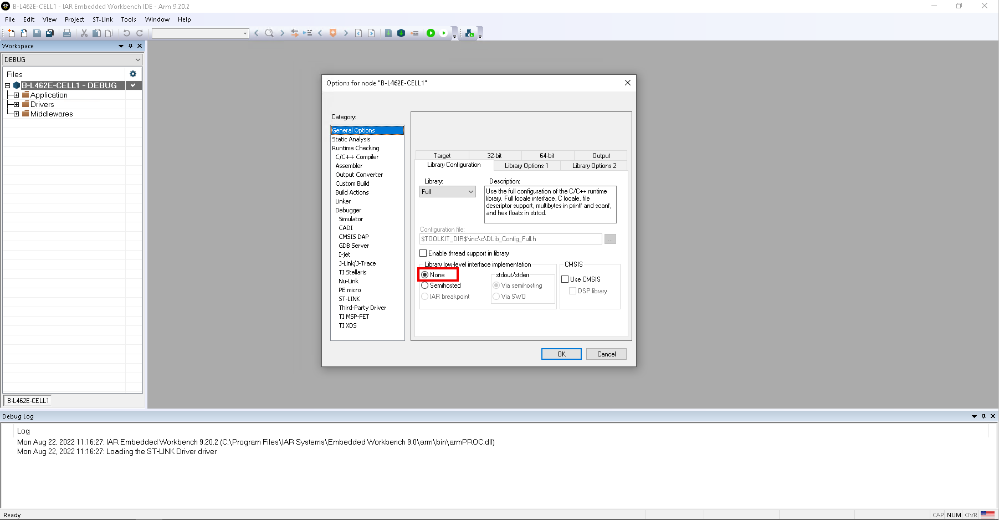
In
main.cadd the following lines of code:#include "plf_hw_config.h" #include <stdio.h> #include "trace_interface.h" #include <LowLevelIOInterface.h> // ... int iar_fputc(int ch); #define PUTCHAR_PROTOTYPE int iar_fputc(int ch) // ... size_t __write(int file, unsigned char const *ptr, size_t len) { size_t idx; unsigned char const *pdata = ptr; for (idx = 0; idx < len; idx++) { iar_fputc((int)*pdata); pdata++; } return len; } PUTCHAR_PROTOTYPE { /* Place your implementation of putchar here */ /* e.g. write a character to the USART3 and Loop until the end of transmission */ HAL_UART_Transmit(&TRACE_INTERFACE_UART_HANDLE, (uint8_t *)&ch, 1, 0xFFFF); return ch; }
Keil uVision#
-
The newest Keil MDK distribution no longer contains Arm Compiler 5, which is a target compiler when generating a project with STM32CubeMX. You have to either install Keil MDK version older than 5.37 or install the missing compiler manually - more information here.
-
Keil's
errnodefines conflict with LwIP'serrnoand it must be resolved by adding LwIP's include folder to the list of the system includes. To do so, navigate to Project -> Options for Target (...) -> C/C++ -> Misc Controls and add a following command control option (ensure proper path; incorrect path will not generate an error):
-J ../Middlewares/Third_Party/AVSystem_LwM2M_Stack/LwIP/src/include/compat/stdc -J "$J"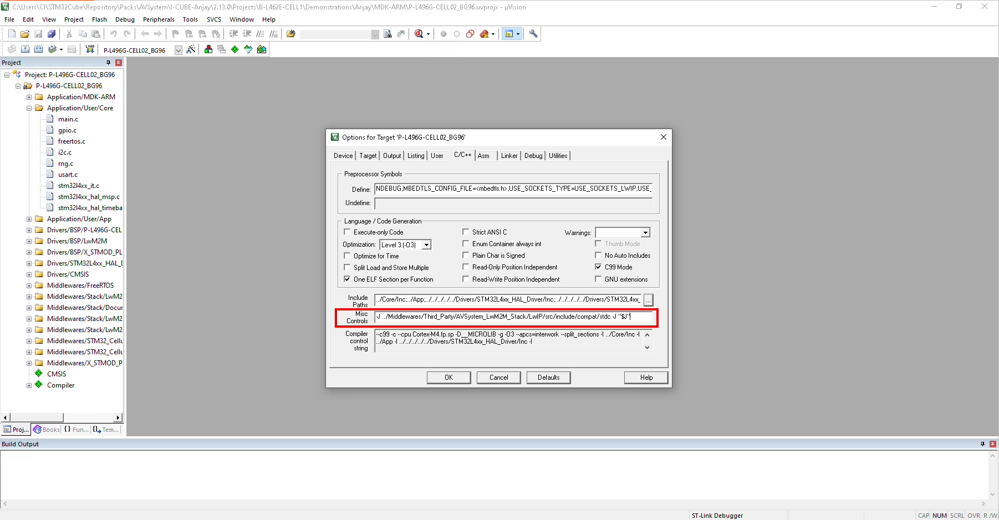
-
To ensure proper handling of serial output with application flashed on board and not attached to uVision, navigate to Project -> Manage -> Run-Time Environment... -> Compiler -> I/O, select checkboxes and choose User variant for STRERR, STDIN and STDOUT. 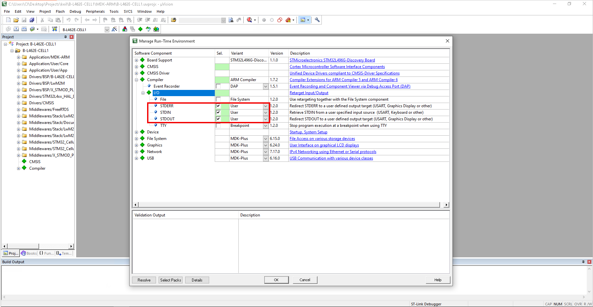
In
main.cadd the following lines of code:#include "plf_hw_config.h" #include <stdio.h> // ... #define PUTCHAR_PROTOTYPE int fputc(int ch, FILE *f) // ... PUTCHAR_PROTOTYPE { /* Place your implementation of putchar here */ /* e.g. write a character to the USART3 and Loop until the end of transmission */ HAL_UART_Transmit(&TRACE_INTERFACE_UART_HANDLE, (uint8_t *)&ch, 1, 0xFFFF); return ch; }